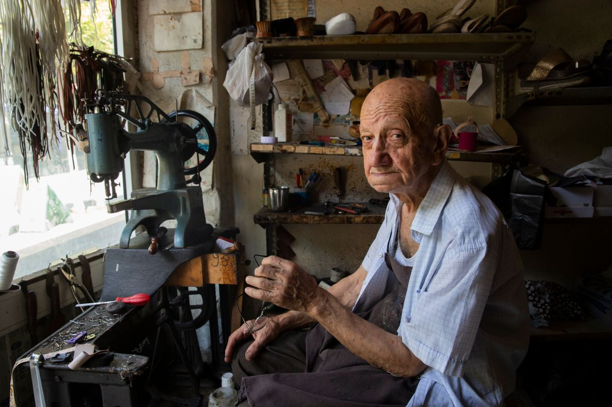

The maker, the materials, and the looking-after
Order book open · Resoles taken by post · Northampton, England
James Aldous started in the trade at seventeen, in the clicking room of a Northampton factory — the town has made shoes for six hundred years, and the factory system is its own education: thousands of pairs teach you what a hide can and cannot do faster than any book. He moved to the closing room, then to the making benches, and left at twenty-six to apprentice in bespoke work, because the factory's one compromise never stopped troubling him: every pair was made to fit a size, and feet are not sizes.
His own workshop opened in 2009. It is deliberately small: one bench for making, one for repairs, a shelf of clients' lasts that grows by a few pairs a year, and an order book that has never been advertised — every entry in it arrived by word of mouth or by a pair of shoes being seen on somebody's feet. He takes on about twenty pairs a year. That is not a marketing scarcity; it is the arithmetic of forty to sixty hours a pair and one pair of hands.
The workshop's rules are written inside the order book's front cover, and they have not changed since the first entry: the quote is fixed before the leather is cut; the construction is named accurately, including when a factory's work is the honest recommendation; and any shoe that cannot be repaired properly is returned with the reason written down, at the workshop's cost, rather than repaired badly at the customer's.
A note on the photographs on this page and across the site: they show the trade — benches, lasts, lasting and repair work — and are credited in full in CREDITS.md. They are not portraits of Aldous himself; a one-man workshop has nobody spare to hold the camera.

Leathers, and what each is honestly for
Five upper leathers cover nearly every commission. Each is listed with its weakness as well as its virtue, because you will live with both.
| Box calf | The standard dress-shoe leather: fine-grained calfskin with a smooth, even surface that takes a high shine. Creases finely at the flex point and holds its shape for decades. Its weakness is water — a soaked box calf shoe must dry slowly or it will dry stiff. |
|---|---|
| Suede | The flesh side of the hide, brushed to a nap. More forgiving of scuffs and creasing than any smooth leather, and it hides a multitude of working days. It is not fragile, whatever its reputation — but it should be proofed before its first wet outing, and it drinks mud. |
| Shell cordovan | Cut from two oval shells in a horse's rump — a pair of shoes uses both shells of one animal, which is why it costs what it costs. Dense and almost poreless: it does not crease, it rolls, in soft waves. It shines with a brush alone and shrugs off rain better than any calf. Heavy, warm, and slow to break in. |
| Waxed kudu | Antelope hide, waxed and left with its scars and scratches visible in the grain — they are the animal's life, not defects. Supple, tough, and made for country boots that will be scuffed weekly. The wrong leather for anyone who wants a boot to stay looking new; it will not, and that is the point of it. |
| Museum calf | Calfskin hand-finished with a mottled, clouded colour, no two panels alike. Beautiful in a way plain calf is not. Stated plainly: the finish is a surface artistry, and strong sun will fade it unevenly over the years — choose it for the patina it will become, not the one it arrives with. |
What the bottom of the shoe is made of
Insoles and soles here are oak-bark-tanned leather — pit-tanned for twelve months or more, the slow way, because it carves cleanly for the welt rib, resists the damp of a foot for decades, and takes a stitched channel that faster-tanned leather tears out of. The welt thread is linen, waxed by hand with pitch and rosin at the bench, the way it has been done for centuries, because a waxed linen seam can be unpicked and restitched at resole time. Cork fills the cavity between insole and sole; the shank is beech. Nothing structural in the shoe is glued, and nothing in it is plastic except, where a client asks for one, a rubber top-piece on the heel.
Looking after a welted shoe
A welted shoe asks little, but it asks it regularly. These are the instructions that go into every order-book entry at delivery.
Rest them, on their trees
Never wear the same pair two days running. A day's wear puts moisture into the leather that needs a full day and night to leave it. Put the lasted trees in while the shoes are still warm from your feet — that is when they do their work, holding the shape as the shoe dries.
Cream before wax
Brush after every few wears. Feed with a cream polish — cream is food, wax is only a coat — every month or so of regular wear, and add wax on top only where you want the shine. More shoes are ruined by starvation than by wear.
Wet shoes dry slowly
If a pair is soaked, stuff it loosely with newspaper, lay it on its side, and leave it in moving air for at least a day. Never on a radiator, never with a heater: dried-out leather cracks at the flex point, and cracks can be stabilised but never un-cracked.
Heels before they lean
Replace the heel top-piece while there is still top-piece left. Worn into the leather stack, a heel starts to change how the whole shoe stands, and the repair stops being a £45 one.
Resole before the welt
Press the sole at the ball of the foot. When it feels thin and spongy rather than firm, it is time — send the pair in then, while the welt is still sound. A resole that reaches the welt in time is routine; one that arrives after the welt has worn through costs more and saves less.
Store them breathing
Cloth bags, open air, out of direct sun. Not in plastic boxes, not in a damp cellar, and not forgotten at the back of a wardrobe for years — leather that is never worn dries out as surely as leather that is worn daily.
Questions the page hasn't answered?
Ask them at a first appointment — or by email, if a resole is what you have in mind and Northampton is far away.
Book a first appointment or write directly: appointments@aldous-last.example